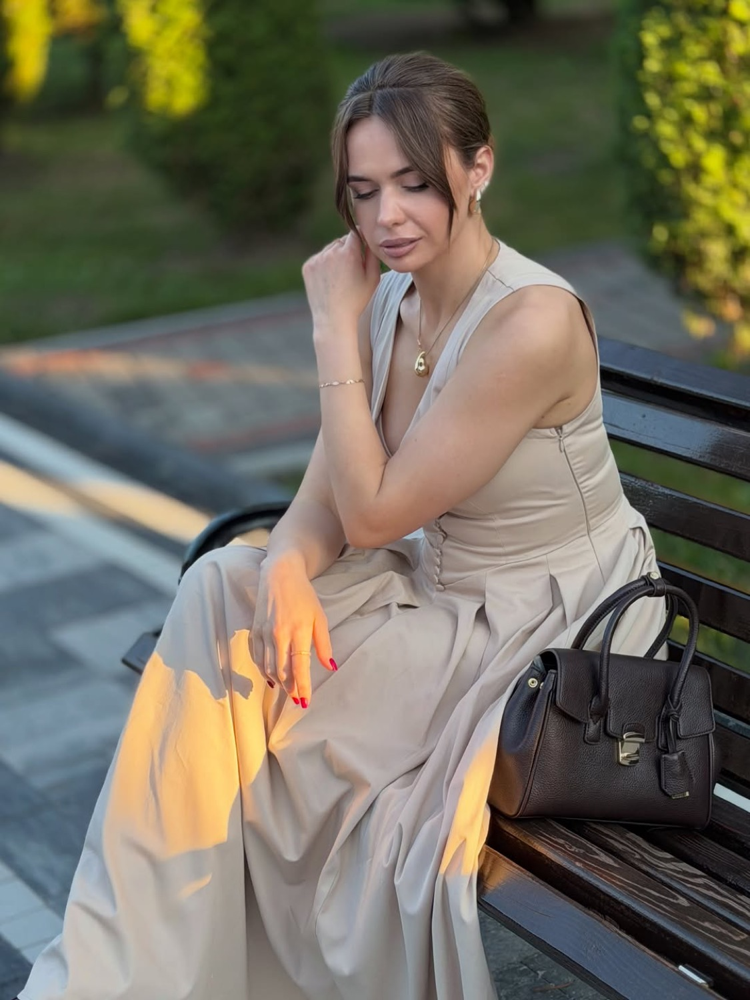

Natural anti-age і гармонізація: делікатні губи, жива міміка, ніякої маски. Для тих, хто хоче виглядати індивідуально, а не однаково.
Анестезіологія - це спеціальність, де щодня працюють з дихальними шляхами, судинами і невідкладними станами. Там вчать не «як зробити красиво», а що робити, коли щось пішло не так.
В естетичній медицині це означає інший рівень контролю: анатомія судин, розрахунок дози, готовність до ускладнень до того, як вони стались.
«Ми не просто заколюємо одну зморшку. Ми працюємо з усією мімікою комплексно - обличчя лишається живим, але виглядає відпочилим.»
Ви й далі здивовано піднімаєте брови і щиро смієтесь. Зникає втома, а не емоції.
Об'єм, який помічають як «ти добре виглядаєш», а не як «ти зробила губи».
Не підганяю під тренд. Працюю з тим обличчям, яке у вас є, підкреслюючи його.
Ін'єкції - частина, а не все. Підбираю домашній догляд, щоб результат тримався довше.

Я прийшла в естетичну медицину з анестезіології - спеціальності, де ціна помилки надто висока, щоб працювати «на око».
Тому на консультації ви почуєте не «давайте зробимо ще ось тут», а розбір: що саме дає вигляд втоми, що варто робити зараз, а що не потрібно взагалі.
Веду блог не для краси картинки, а щоб пояснювати: чому ефект від ботоксу зникає швидше, ніж очікували, як працює бар'єр шкіри, навіщо потрібен захист від сонця. Обізнаний пацієнт завжди має кращий результат.
Постійний прийом у Тернополі й регулярні виїзні дні в Івано-Франківську. Дати виїздів видно наперед, щоб ви могли спланувати.
Оберіть місто й напрям - покажу вільні вікна. Консультація перед першою процедурою обов'язкова.
Запис підтверджую особисто. Якщо після консультації процедура вам не потрібна - скажу про це прямо.